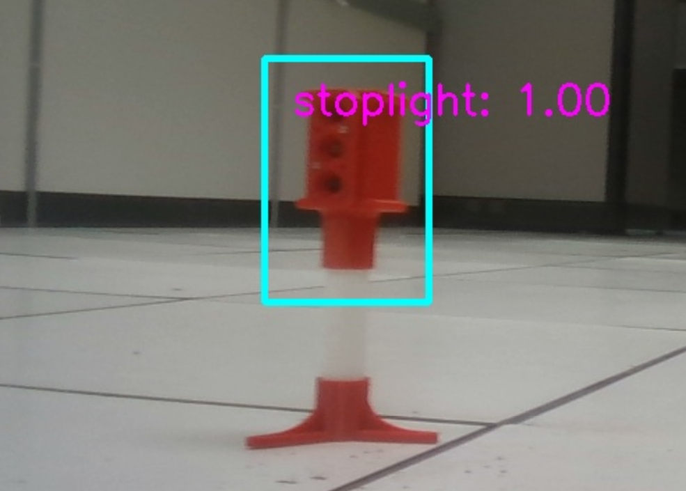
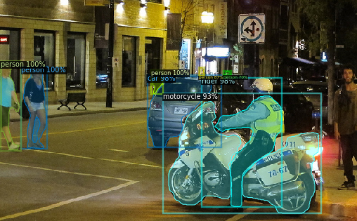

Autonomous RC Car System
Supervisor: Prof. Suman Banerjee, Dept. of CS, UW-Madison | Sep 2020 - Dec 2021
The project involved building a proof of concept for an open source autonomous vehicle testbed by training PyTorch based SSD Mobilenet object detection model to do live detection of traffic signs. The proposal was accepted and presented at ACM MobiArch 2022
Skills: Python, PyTorch, OpenCV, Deep Learning

Instance Segmentation App
Supervisor: Prof. Mohit Gupta, Dept. of CS, UW-Madison | Jan - May 2021
The app allows users to perform instance segmentation tasks and receive annotated results on their uploaded images. For each object detected in the image, the annotation includes a bounding box, a class label, and a binary mask that segments the object from the background.
Skills: Python, Pytorch, OpenCV, Computer Vision
Business Success/Viability Forecast Analysis
Supervisor: Prof. Daniel Pimentel-Alarcon, Dept. of Biostatistics, UW-Madison | Sep - Dec 2020
The incidence of COVID-19 posed a significant challenge to businesses across various industries. Some businesses thrived while others closed. Thus, it became more important than ever for business owners, customers, investors, and others to know which businesses would survive. To answer this question, multiple ML models were trained using the Yelp dataset. Tasks involved performing feature engineering, creating training and validation pipelines, and determining the vital factors affecting business survival.
Skills: Python, Scikit-Learn, Machine Learning